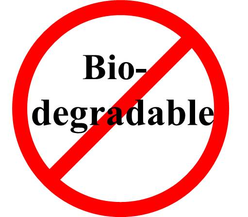

Why We Recycle!
Polystyrene is an integral part of global plastic market and highly valued thermoplastic. The global demand for Polystyrene increased from 13 million tons in year 2000 to around 14.9 million tons in 2010; which is expected to grow approximately 23.5 million tons by year 2020. However, this increase in usage resulted in proportional increase in the PS waste, as it is non-biodegradable polymer. The optimal solution for managing this waste is the recycling of PS.

Polystyrene takes at least 500 years to decompose and therefore categorised as non-biodegradable polymer or material. When polystyrene is sent to the landfill, it is quickly covered and this process deprives it of water and oxygen, which would normally help it to break down. Much of the disposable packaging that we eat from today will therefore still be around in 500 years.
Marine Pollution: The United Nations Environment Program estimated in 2006 that every square mile of ocean hosts 46,000 pieces of floating plastic. Polystyrene foam presents unique management issues because of its lightweight nature, floatability, and likelihood to be blown from disposal sites even when disposed of properly. The lightweight and buoyant polystyrene travels easily through gutters and storm drains, eventually reaching the ocean. Plastic from urban runoff is the largest source of marine debris worldwide.
Pollution of waterways and waterfront negatively affects tourism and quality of life. When polystyrene travels down waterways and storm drains into the ocean, it breaks down into smaller, non- biodegradable pieces that are ingested by marine life and other wildlife thus harming or killing them. In one Californian study, at least 162 marine species including most seabirds were reported to have eaten plastics and other marine litter. As a result of the impacts on marine pollution and adverse effect to marine wildlife, several coastal cities across the United States, have banned the use of polystyrene food packaging altogether.
Pollution of waterways and waterfront negatively affects tourism and quality of life. When polystyrene travels down waterways and storm drains into the ocean, it breaks down into smaller, non- biodegradable pieces that are ingested by marine life and other wildlife thus harming or killing them. In one Californian study, at least 162 marine species including most seabirds were reported to have eaten plastics and other marine litter. As a result of the impacts on marine pollution and adverse effect to marine wildlife, several coastal cities across the United States, have banned the use of polystyrene food packaging altogether.


The fact that styrene can adversely affects human in a number of ways raises serious public health and safety questions regarding its build-up in human tissue. Â Although there is evidence that styrene causes cancer in animals, it has not yet been proven to cause cancer in humans. Styrene primarily exhibits its toxicity to humans as a neurotoxin by attacking the central and peripheral nervous systems. The accumulation of these highly lipid-soluble (fat-soluble) materials in the lipid-rich tissues of the brain, spinal cord, and peripheral nerves is correlated with acute or chronic functional impairment of the nervous system.